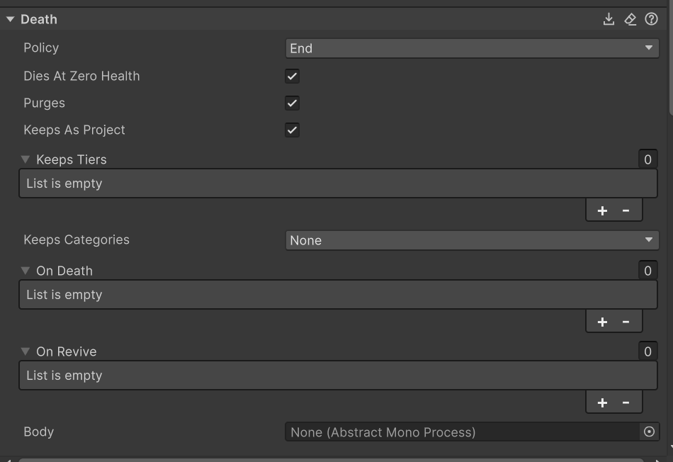

Death
The Death section sets what the entity's death does.
flowchart TD
classDef general fill:#FFE86D,stroke:#CBB333,color:#574900
classDef decision fill:#A0C4FB,stroke:#6A8BBF,color:#14315E
classDef terminator fill:#DDDDD8,stroke:#A8A8A0,color:#434339
t1(["DeathWatcherAnalysisWorker<br/>reaches its threshold<br/>at the end of frame"]):::terminator
t2(["GASCore.WatchProjectHealth<br/>the Health-role attribute is at or below 0,<br/>DiesAtZeroHealth is on, no death watcher"]):::terminator
t3(["code calls gas.MarkDead()"]):::terminator
da["DeathAction, Critical"]:::general
md["GASCore.MarkDead<br/>IsDead = true, EntityDied, FrameSummary<br/>the killer is the source of the last workable loss<br/>sends DIED to itself and KILL to the killer"]:::general
ec["each entity component's Death(ctx)<br/>Bounty gives its effect to the killer and allies<br/>Respawn calls RespawnTimer.ReviveIn(delay, place)<br/>EffectSystem.HearDeath(): effect components' Death"]:::general
p{"EntityDeath<br/>policy?"}:::decision
st["Stay: at the end of frame, Die()<br/>ForgePurge.PurgeOnDeath when Purges is set<br/>end the body, apply the OnDeath effects"]:::general
st2(["stays registered: its abilities refuse as Dead,<br/>and others' effects are refused"]):::terminator
en["End: at the end of frame<br/>Callbacks.SystemDisabled,<br/>then the hub's HandleDestruction()"]:::general
mono["Mono hub: Relay.TerminateImmediate(),<br/>else Destroy(gameObject)"]:::general
rth["Runtime hub: Relay.Terminate(),<br/>which queues"]:::general
wt(["hub.WhenTerminate(), GASCore.WhenTerminate()<br/>components End, services End, transfers given back,<br/>sides cleared, AbilitySystem.ShutDown, ForgeEntities.Remove"]):::terminator
rv(["Revive, Stay only: a RespawnTimer's countdown,<br/>ReviveOnRemovalEffectWorker, or gas.Revive(at)"]):::terminator
r1["GASCore.Revive: IsDead = false, services Revive, analysis workers Rearm<br/>the OnRevive effects, spawn the body<br/>Callbacks.EntityRevived, REVIVED, components Revive"]:::general
t1 --> da
t2 --> da
da --> md
t3 --> md
md --> ec --> p
p -->|Stay| st --> st2
p -->|End| en
en --> mono --> wt
en --> rth --> wt
st2 -.-> rv
rv --> r1
What triggers death, what each EntityDeath policy does at the end of frame, and how an entity revives.

The Ranger's Death section.
| Property | Description |
|---|---|
| Policy | End (default): as it dies, its hub ends it at its frame's end, as an entity always did. Stay: keeps it, dead, until it revives, for a MOBA hero or anyone who dies and comes back. |
| Dies At Zero Health | On by default: where no death watcher watches, the entity dies as the attribute playing its project's Health role reaches 0. Off, as for a training dummy, that attribute doesn't kill it. |
| Purges | On by default: a staying entity's death purges its effects, all but those it keeps. |
| Keeps As Project | On, it keeps what its project's Purge Levels keep on death. |
| Keeps Tiers | More tiers it keeps. |
| Keeps Categories | More categories it keeps, whatever their effects' tiers. |
| On Death | The effects it takes as it dies. |
| On Revive | The effects it takes as it revives, such as its health back. |
| Body | A MonoBehaviour process, a prefab, that it spawns where it is as it starts and as it revives, and ends as it dies. |
In this section
- How an entity dies: An entity dies as a death watcher among its analysis workers, or its attribute set's, says it does.
- Staying dead: An entity whose Policy is Stay dies at its frame's end and stays registered, with its items, levels and lasting effects.
- Purging on death: A staying entity's death purges its effects, all but those it keeps, as the games' deaths do (Effects: Purging).
- On Death and On Revive: A staying entity takes the effects these two lists hold as it dies and as it revives.
- Body: An entity's Body is a MonoBehaviour process, a prefab, that it spawns where it is as it starts and as it revives, and ends as it dies.
- Reviving:
Revive(at)on either hub brings a staying entity back, at a point or where it was.